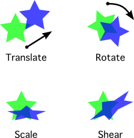

Transform objects are a mathematical mapping from one coordinate system to another. The coordinate systems can differ in terms of position (i.e., location of the origin), scale, axis direction and relative axis orientation. Transform objects can be applied to other transforms, vectors, or shape objects to map them between coordinate systems.
Transforming between coordinate systems may not, at first glance, appear to have a lot of practical value. The value is in realizing that mapping an object to another coordinate system represented by a transform is equivalent to transforming the object itself within the same coordinate system. Typically, it is the object itself we are interested in modifying, and not the coordinate frame, and linear transforms provide a concise construct for representing a myriad of possible mutations.
Planar transforms are represented as linear transformation matrices. However, their interface provides abstractions so that common transformation operations can be conveniently created and used, without having to worry about the underlying matrix math.
Affine transforms in planar can represent a variety of linear transformations in 2D space. Specifically, an affine transform can represent a combination of translation, scale, rotation and shear operations.
Mathematically, an affine transform is one which preserves parallel aspects when applied. That is, if a shape is transformed by an affine transformation, points in the shape that define parallel lines in the original shape, will always still define parallel lines in the transformed shape.
The affine transform’s preservation of parallel lines may seem arcane, but it implies some important limitations, and benefits. Practically speaking it means that you cannot use an affine transform to create a perspective projection of a 2D shape. It also means that you cannot use them to twist or bend the shape like a pretzel. It also means that the implementation can be more efficient in terms of memory and CPU than a general linear transformation.
A 2D affine transform is represented by a 3 X 3 transformation matrix. However, the last row of all affine transformation matrices is the fixed sequence | 0 0 1 |. Therefore only the first two rows are actually significant, and need to be stored. Because of this, Affine objects are stored internally as an array of 6 double-precision floating point values. Like Vec2 objects, Affine objects are immutable. Operations that modify a transform always return a new transform object.
There are a variety of constructors available for Affine objects. It is typical to use an alternate constructor to create affine transforms, rather that the default constructor. For example, it is trivial to create the simplest Affine transform, the identity transform:
>>> from planar import Affine
>>> ident = Affine.identity()
>>> print(ident)
| 1.00, 0.00, 0.00|
| 0.00, 1.00, 0.00|
| 0.00, 0.00, 1.00|
The identity transform always leaves an object unchanged when it is applied. Printing the Affine instance shows the values in a conventional matrix grid notation. Since the bottom row is always the same for all Affine transforms, you can effectively ignore it, but you can see the obvious diagonal unity values in the identity transform. The first column can be read as the scale and orientation vector for the X-axis, the second column as the same vector for the Y-axis, and the third column as the offset of the origin. Since these vectors are (1, 0), (0, 1) and (0, 0) respectively, in the above, it is easy to see why applying this transform has no effect.
Another basic transform is a simple translation:
>>> from planar import Affine
>>> offset = Affine.translation((5, -1))
>>> print(offset)
| 1.00, 0.00, 5.00|
| 0.00, 1.00,-1.00|
| 0.00, 0.00, 1.00|
You can see you this is basically the same as the identity transform, except that the offset of the origin in the third column is now non-zero.
Another simple transform is a scale:
>>> from planar import Affine
>>> scale = Affine.scale(2.5)
>>> print(scale)
| 2.50, 0.00, 0.00|
| 0.00, 2.50, 0.00|
| 0.00, 0.00, 1.00|
The example above applies a scale of 2.5 symmetrically to both axes. If desired, a different scale can be specified for each axis:
>>> from planar import Affine
>>> scale = Affine.scale((0.75, 2))
>>> print(scale)
| 0.75, 0.00, 0.00|
| 0.00, 2.00, 0.00|
| 0.00, 0.00, 1.00|
When applied, this transform will scale an object to 75% of its original size in the X-axis and double its size along the Y-axis.
It is also possible to flip an object along an axis by supplying a negative scaling factor:
>>> from planar import Affine
>>> flip_x = Affine.scale((-1, 1))
>>> print(flip_x)
|-1.00, 0.00, 0.00|
| 0.00, 1.00, 0.00|
| 0.00, 0.00, 1.00|
As you have probably guessed, applying the transform above will flip an object along the X-axis, mirroring it across the origin.
More sophisticated transforms can modify coordinates in more complex ways, such as applying rotation:
>>> from planar import Affine
>>> rot90 = Affine.rotation(90)
>>> print(rot90)
| 0.00, 1.00, 0.00|
|-1.00, 0.00, 0.00|
| 0.00, 0.00, 1.00|
>>> rot45 = Affine.rotation(45)
>>> print(rot45)
| 0.71, 0.71, 0.00|
|-0.71, 0.71, 0.00|
| 0.00, 0.00, 1.00|
Notice how the 90 degree rotation simply maps the original X coordinates directly to the Y-axis, and vice versa for Y as you would intuitively calculate such a rotation yourself. The 45 degree rotation, being halfway between 0 and 90, mixes the coordinate values from each axis equally. Note the precision is limited to 2 places in the string representation of a matrix for easy reading. The repr() of a transform instance provides greater precision, at the cost of some readability.
By default, rotation transforms are performed about the origin. You can specify another point to rotate around using the optional pivot argument:
>>> from planar import Affine
>>> rot = Affine.rotation(45, pivot=(-3, 8))
>>> print(rot)
| 0.71, 0.71, 4.78|
|-0.71, 0.71, 4.46|
| 0.00, 0.00, 1.00|
You can see that this includes a translation in the matrix values. You can use the pivot to rotate an object about its center, or rotate an object about another object.
The last Affine constructor allows the creation of shear transforms. Shears can alter the angle of the X and Y axes relative to one another:
>>> from planar import Affine
>>> shear = Affine.shear(30)
>>> print(shear)
| 1.00, 0.00, 0.00|
| 0.58, 1.00, 0.00|
| 0.00, 0.00, 1.00|
The above applies a 30 degree shear to the X-axis, and leaves the Y-axis unchanged. We can also create a shear for both axes:
>>> from planar import Affine
>>> shear = Affine.shear(-45, 15)
>>> print(shear)
| 1.00, 0.27, 0.00|
|-1.00, 1.00, 0.00|
| 0.00, 0.00, 1.00|
A shear transform can alter the shape of an object. For example, shearing a rectangle results in a parallelogram; shearing a circle results in an ellipse.
The final way to construct an Affine instance is to use the default constructor. This accepts 6 floating point arguments that are assigned row-wise to the top 2 rows of the transformation matrix. This is probably only useful if you have a fixed, pre-calculated set of matrix values that you want to use:
>>> from planar import Affine
>>> affine = Affine(0.2, 0.3, 0.4, 0.5, 0.6, 0.7)
>>> print(affine)
| 0.20, 0.30, 0.40|
| 0.50, 0.60, 0.70|
| 0.00, 0.00, 1.00|
Regardless of how you instantiate Affine, you can access the values in the matrix as elements of a row-wise sequence:
>>> len(affine)
9
>>> affine[3]
0.5
>>> affine[-1]
1.0
Of course, since affine transforms are immutable, you cannot assign directly to matrix elements to modify them.
Affine transforms can be combined and applied to objects via matrix multiplication. Combining transforms is powerful, because it allows you literally combine the effects of multiple different transformations into one. For example, suppose you have two transforms, a rotation and a scale:
>>> from planar import Affine
>>> rot = Affine.rotation(30)
>>> scale = Affine.scale(2)
You can combine these two transforms into a single one that does both operations at once by multiplying them:
>>> rot_and_scale = rot * scale
Multiplying the two transforms performs a matrix multiplication of the transformation matrices and creates a new affine instance from the resulting matrix. Note that multiplying two affine transforms always results in an affine transform, with its parallel-preserving properties.
It’s important to understand that matrix multiplication is not always commutative, and thus is order-dependant. For example, rotating an object first and then translating it will return a different result than performing the translation first and then the rotation.
Often when working with transforms, it is useful to inspect them in terms of certain high-level mathematical properties. These properties can expose important facts, and limitations of a specific transform.
Boolean properties of Affine instances are exposed in several is_* attributes. All of these properties can be determined by examining the transform matrix values directly yourself, but using the built-in property attributes is more convenient and efficient.
is_identity – True if the transform is effectively the identity transform. Identity transforms may be created directly, of course, but may also be the result of combining inverse transforms, such as a scale of 2.0, and a scale of 0.5.
is_rectilinear – True if applying the transform would preserve the axis-alignment of an object. That is, points in a shape that make lines parallel to the X or Y axis before being transformed, would still make lines parallel to an axis after being transformed. Note, that they may not be parallel to the same axis as before. Examples of rectilinear transforms include translation, scale, and rotation in multiples of 90 degrees.
is_conformal – True if the angles between points within an object would not change as a result of the transform being applied. This means that the transform effectively has zero shear.
is_orthonormal – If True, applying the transform to a shape would result in a congruent shape with no effective scaling or shear. Such a transform is also called a “rigid motion” since it does not squash or stretch the shape. All orthonormal transforms are conformal, and have a determinant of 1. Thus, they are never degenerate.
is_degenerate – True if applying the transform to a shape would reduce its area to zero. This means that the scaling factor of the transform (i.e., the determinant) is effectively zero. Degenerate transforms cannot be inverted, because they are “lossy” by completely removing information in one or both dimensions.
Note
All boolean properties of transforms operate within the rounding limits specified by planar.EPSILON. This allows them to operate intuitively in the face of floating point precision limits.
Two other attributes are available for affine transforms:
determinant – A scalar floating-point value derived from the transform that is equal to the overall scaling factor of the transform when applied to a shape. Mathematically:
new_area = old_area * abs(determinant)
Note that a determinant will be negative if scaling along one dimension is negative, usually indicating a flip across an axis. Shear transforms along both axes will also affect the area of an object, resulting in a non-unity determinant. Rotation and translation never affect the area of objects, thus such transforms will always have a determinant of 1.0.
If a transform has a determinant of zero, it is considered degenerate. This means that it effectively “collapses” an object to zero area, losing information along one or both dimensions as a result. Because of this, such transforms cannot be inverted.
column_vectors – A 3-tuple containing the 2D column vectors from the transformation vector. Since the bottom row of every affine transform is fixed, the column vectors contain only the top 2 rows. The vectors define the X-axis, Y-axis, and origin respectively of the transform’s coordinate system.
As you might expect, Affine instances support equality comparisons. These simply compare the transformation matrix values directly. Affine transforms also support an Affine.almost_equals() method for approximate comparison, which is useful to compensate for floating point precision limits.
Other comparison operations, such as greater or less than are not supported.
The only arithmetic operation supported for Affine transforms is multiplication. This is because it is the only operation that can guarantee that the result is also an affine transform.
If a transform is not degenerate, it can be inverted using the unary ~ operator (tilde). An inverse transform performs the exact opposite transform as the original. Multiplying a transform by its inverse, results in the identity transform:
T * ~T == Affine.identity() # if not T.is_degenerate